I was part of the XiP Desktop team, responsible for maintaining internal web apps that manage Independent Price Verifications operations and reports.
In this role, I utilised JS/TypeScript, React, and GraphQL to develop and enhance our applications. We relied on APIs and microservices to power our apps. Additionally, we used external libraries such as AG Grid for data display.
Part of my responsibilities, was to liaise with stakeholders and different teams to collect business requirements for new and existing features.
I was also responsible for overseeing the deployment of our applications. I ensure smooth and efficient deployment processes.
I have taken ownership of a project within our team, leading the migration to the NextJS framework and incorporating the Tailwind framework. This initiative has enhanced the performance and development efficiency of the project.


 
